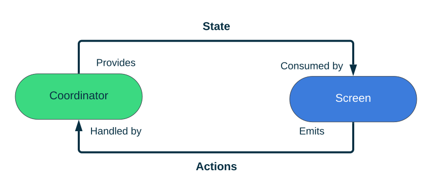

Home
This repository serves as the opinionated knowledge hub that contains component descriptions best practices and tools for developing complex UI features using Compose
🚧 Work in Progress
These pages are still work in progress and might contain spelling errors, inconsistencies and unfinished pages.
Overview
Featured approach has following components
- State - The static state of our Screen
- Actions - Set of user interactions available on the screen
- Screen - Stateless representation of our feature UI, consumes state and emits Actions
- Coordinator - Provides the state and consumes Actions. Coordinates different state providers and action handlers to fulfill user journey
- Route - Main entry point to our Screen. Remember the coordinator and actions. Collects the state

Resources
The list of resources associated with Compose UI Architecture
Articles
- Jetpack Compose UI Architecture - Monstarlab Engeneering Blog Article that would be a great introduction into the core concepts and its usage.
Tools
Jetpack Compose UI Archicture Templates IDE Plugin
Android studio plugin that facilitates creating new Jetpack Compose powered UI screens for android.
- Provides a set of templates that can be used to create a set components described here
- Provides a set of Live Templates that can to write Compose UI code faster